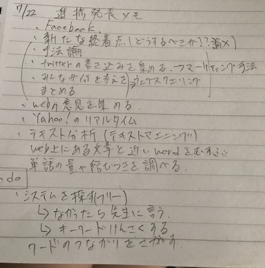
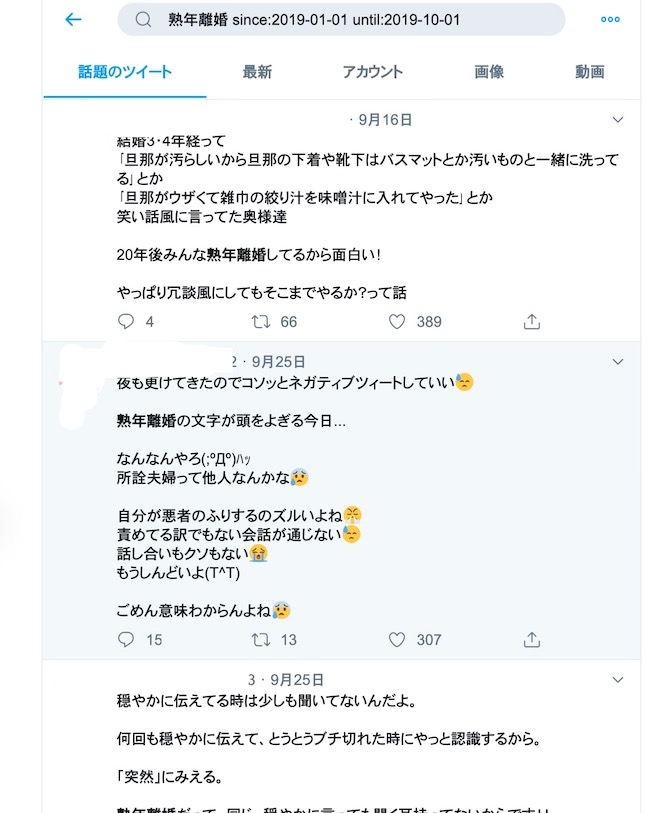
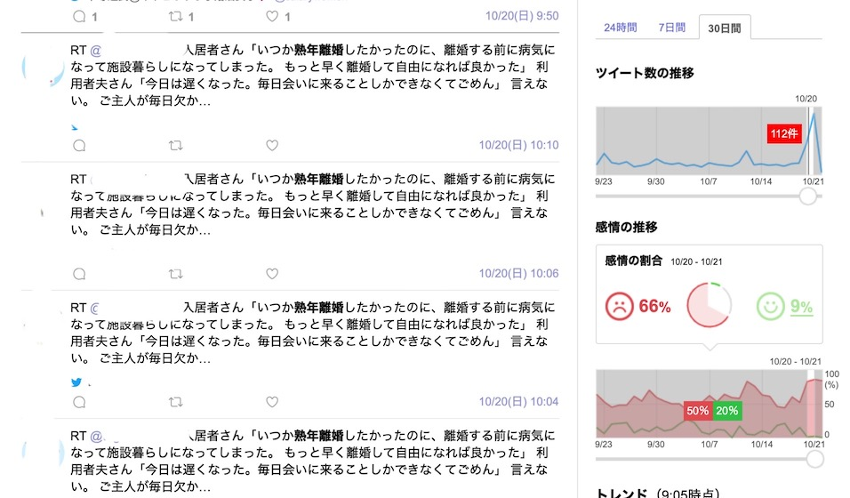

WebサイトからWebページのHTMLデータを収集して、特定のデータを抽出、整形し直すこと。
参考
文章を処理してパターンを発見する手法。専用ツールを利用して、特定の単語の出現率を計算、同じ文のどのような単語が一緒に存在するかという共起性の導き出すことなどが可能。
参考
Twitterデータをテキストマイニングして可視化
https://exploratory.io/note/2ac8ae888097/9462315684068270
AIテキストマイニング
テキストがあれば無料でできるSNS関連は有料
https://textmining.userlocal.jp
道用先生が作成してくださったプログラム
ツイッターで「熟年離婚 since:2019-01-01 until:2019-10-01」と検索
過去の細かい日付でツイートを見ることが出来る

yahooリルタイムで検索
過去の30日のツイートを見ることが出来る。またツイート数の推移、感情の推移もグラフや割合で確認することが出来る。

・直接SNSでテキスト分析するのは難しい
・上記に書いたフリーツールを使ってみる（挑戦中）
・これらを使ってどのように研究を進めていくべきか迷い中